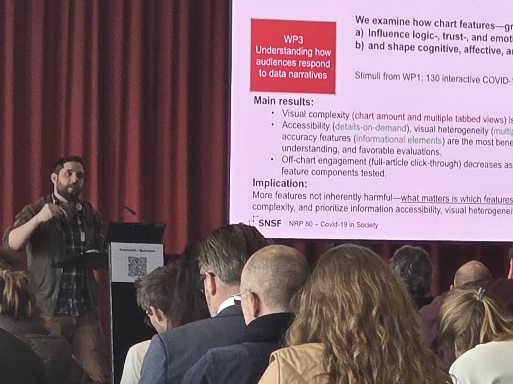
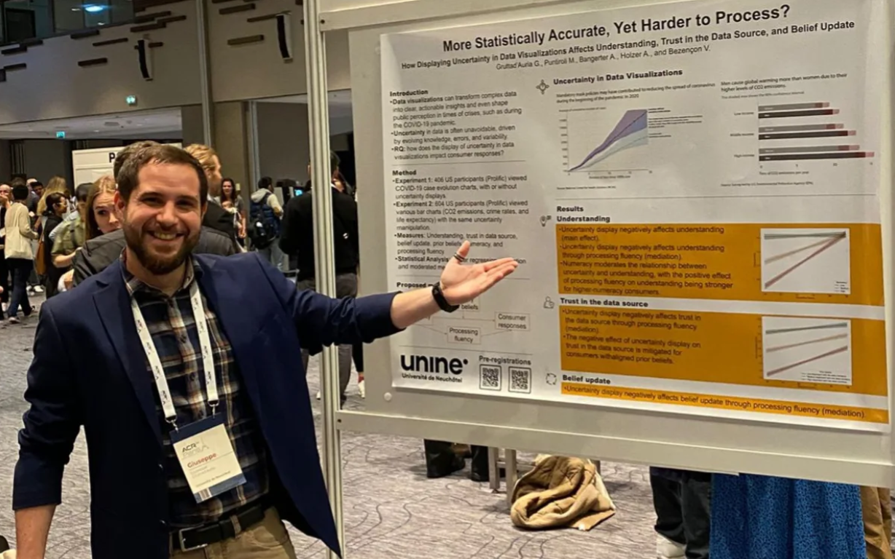

Here you may find conference moments, talks, visuals, travel snapshots, and
occasional posts.
Recent updates
NRP 80 Conference: Covid-19 in Society
· Bern
NRP 80
SNSF
Covid-19 in Society
Presentation
I presented at the
NRP 80 conference on Covid-19 in Society
in Bern, presenting my work on how chart features affect perceptions,
attitudes, and online behavior. The event marked the close of the three-year
research phase of the National Research Programme.

Closing a three-year project with a final presentation in Bern.
ACR 2025
· Washington, D.C.
Association for Consumer Research
Competitive paper
Uncertainty display and consumer responses
At
ACR 2025
in Washington, D.C., I presented research on how uncertainty displays in
data visualizations affect consumer belief updating through processing
fluency and trust.
Presenting research on uncertainty displays in Washington, D.C.
ACR 2024
· Paris
Association for Consumer Research
Working paper
Poster presentation
Uncertainty display and consumer responses
At
ACR 2024
in Paris, I presented a poster on how uncertainty in data visualizations
affects consumer responses. The conversations around the poster helped
sharpen the project's framing around fluency, trust, and evidence evaluation.

Poster conversations in Paris around uncertainty displays.
Public comments
Leave a note (GitHub login required)
For private messages, please use email. For public comments, feedback, or a
quick hello, you can leave a note below.
Public comments are powered by giscus and GitHub Discussions. They are loaded
only if you choose to open them. GitHub login is required to comment.
Public comments are powered by giscus and GitHub Discussions. They are loaded only if you choose to open them. GitHub login is required to comment.